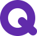

다양한 사회문제 영역의 사회변화 프로젝트를 소개합니다.
추가 문의는 기아대책아동복지회 취약계층지원센터 최서영, 01-2345-6789로 연락주세요.

궁금한 점이 있을 때 어디로 연락해야 하나요?
‘mom편한 퀸즈펀딩’ 이란 무엇인가요?
‘mom편한 퀸즈펀딩’은 어떻게 참여할 수 있나요?
펀딩참여 시 선택한 리워드 상품은 언제 발송되나요?
| 펀딩 참여 기간 | 리워드 제품 발송일 | 비고 |
|---|---|---|
| 5/10~5/12 | 5/17 | 순차발송 |
| 5/13~5/17 | 5/21 | 순차발송 |
| 5/18~5/20 | 5/24 | 순차발송 |
| 5/21~5/24 | 5/27 | 순차발송 |
매칭그랜트(matching grant)의 의미는 무엇인가요?
펀딩 참여기금은 어떻게 사용되나요?
펀딩 참여금액에 대한 기부금영수증 신청이 가능한가요?
‘mom편한 퀸즈펀딩’은 언제까지 참여할 수 있나요?